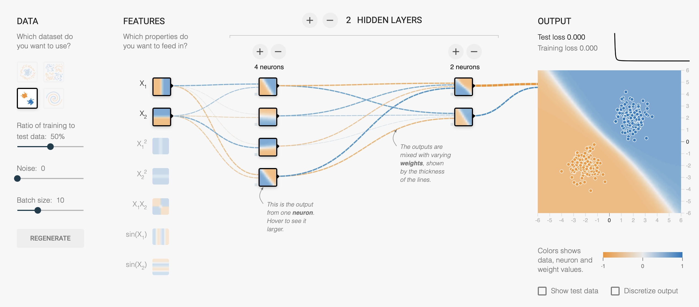
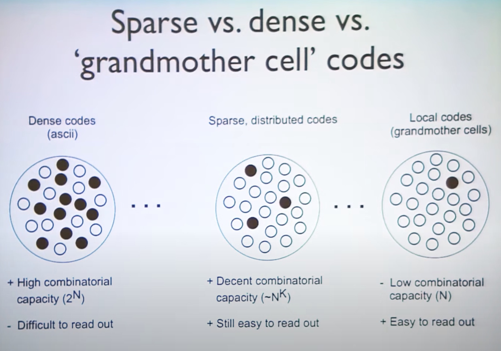

Feature detectors - What the frog's eye tells the frog's brain
Assignment
- Read the "What the frog's eye tells the frog's brain" by Lettvin, J. Y., Maturana, H. R., McCulloch, W. S., & Pitts, W. H. (1959). Proceedings of the IRE, 47(11), 1940-1951. Focus on the Introduction, Methods, the first paragraph of Findings, General Discussion and Conclusion. That is, read the whole paper but de-emphasize the figures and pp.1944-1951.
The Perceptron
Inspired by the way neurons work together in the brain, the perceptron is a single-layer neural network – an algorithm that classifies input into two possible categories. The neural network makes a prediction – say, right or left; or dog or cat – and if it’s wrong, tweaks itself to make a more informed prediction next time. It becomes more accurate over thousands or millions of iterations.
Lefkowitz 2019 (see Further Reading)
Tinker With a Neural Network in Your Browser (created by Daniel Smilkov and Shan Carter).

Today, many believe Rosenblatt has been vindicated. The principles underlying the perceptron helped spark the modern artificial intelligence revolution. Deep learning and neural networks – which can classify online images, for example, or enable language translation – are transforming society.
Lefkowitz 2019
Neural coding and representation
Grandmother cells are extreme in a continuum of possible neural coding strategies. The slide below is from a seminar by Bruno Olshausen: "From natural scenes statistics to models of neural coding & representation."

Further Reading
Read Genealogy of the "Grandmother Cell" -- a short history of neuroscience essay by Charles G. Gross. The Neuroscientist, 8(5): 512-518, 2002.
Kline, R. R. (2015). The Cybernetics Moment: Or why we call our age the information age. Johns Hopkins University Press.
Lefkowitz, M. (2019). Professor’s perceptron paved the way for AI – 60 years too soon. Cornell Chronicle.
Read the following 4-page [PDF] titled Bug-detectors. This is the first part (pp. 1130-1133) of A Fistful of Feature-Detectors, which itself is a section within Ch 14 of Mind as Machine by Margaret Boden.